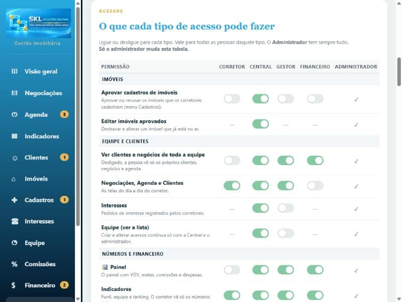

PROCEDIMENTO OPERACIONAL PADRÃO
Definir o que cada tipo de acesso pode fazer
SKL Gestão Imobiliária · Configurações · Acessos
- Objetivo
- Dar ou tirar poderes de cada tipo de acesso (Corretor, Central, Gestor e Financeiro), como aprovar cadastros de imóveis ou ver o Financeiro.
- Aplicação
- Quando a imobiliária quer que um tipo de acesso faça algo a mais (ex.: a Central aprovar cadastros) ou deixe de ver uma tela.
- Responsáveis
- Somente o Administrador muda a tabela. A Central consegue ver, sem alterar.
- Pré-requisitos
- Cada pessoa estar cadastrada na Equipe com o tipo de acesso certo.
- Resultado esperado
- Todas as pessoas daquele tipo passam a ter (ou deixam de ter) a permissão. O próprio servidor confere: quem não tem a permissão não consegue fazer a ação nem por outro caminho.
1. Procedimento
- Confira em Equipe qual é o tipo de acesso da pessoa (coluna “Acesso”). Se a pessoa estiver no tipo errado, troque lá primeiro.
- Abra Configurações e procure o quadro O que cada tipo de acesso pode fazer.
- Encontre a linha da permissão e ligue ou desligue a chave na coluna do tipo. Vale na hora, sem botão de salvar.
- Peça para as pessoas daquele tipo recarregarem a página (ou fecharem e abrirem o app).

A tabela de permissões. Chave verde = ligado. “—” = função que aquele tipo não usa.
O que cada tipo de acesso pode fazer (padrão)
| Tipo | Pode, sem mudar nada |
|---|---|
| Administrador | Tudo, sempre. Única pessoa que muda esta tabela. |
| Central | Aprovar cadastros, editar imóveis aprovados, ver clientes e negócios de toda a equipe, Negociações/Agenda/Clientes, Interesses, Equipe, Proposta de negócios, Painel, Indicadores, ver e lançar no Financeiro, Comissões da equipe e Configurações. |
| Gestor | Ver clientes e negócios de toda a equipe, Negociações/Agenda/Clientes, Proposta de negócios, Painel, Indicadores e ver o Financeiro (sem lançar). |
| Financeiro | Ver clientes e negócios de toda a equipe, Painel, Indicadores, ver e lançar no Financeiro e Comissões da equipe. |
| Corretor | Negociações/Agenda/Clientes (só os próprios), Indicadores (só os números dele), cadastrar imóveis para aprovação e ver as próprias comissões. |
2. Pontos de atenção
As mudanças valem para todas as pessoas daquele tipo. Para uma pessoa só ter mais poderes, troque o tipo de acesso dela na Equipe.
Criar, alterar e remover acessos na Equipe continua só com a Central e o Administrador, mesmo com a tela Equipe ligada para outro tipo.
Um corretor com “Aprovar cadastros” vê a fila em Conta → Cadastros dos corretores. Ele aprova ou recusa o cadastro como está; para corrigir o cadastro antes, peça à Central.
3. Controle do documento
| Elaborado por | Versão | Data | Alteração |
|---|---|---|---|
| SKL Geo Soluções | 2.0 | 04/11/2026 | Entrou a permissão “Proposta de negócios”. |